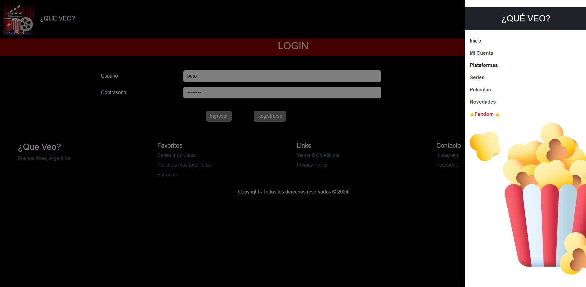
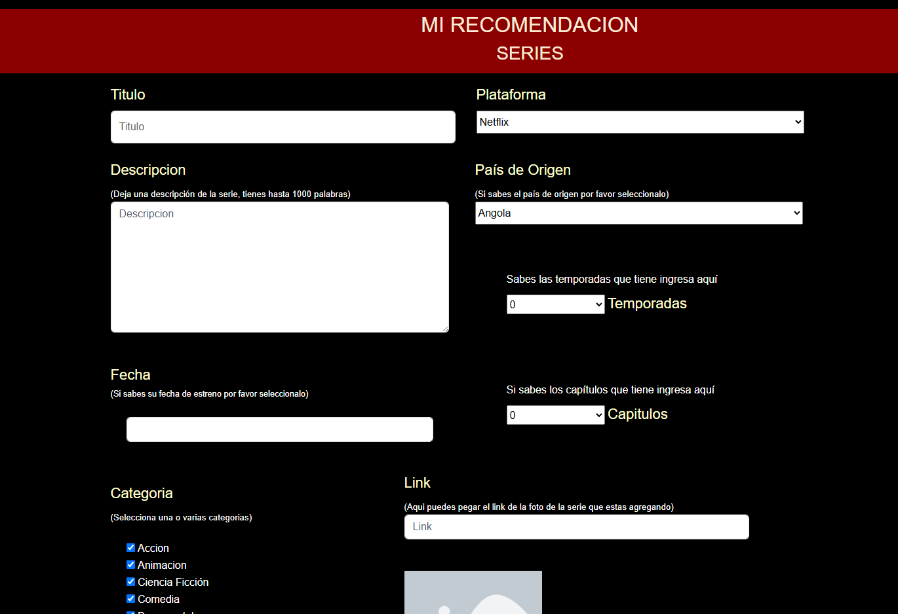
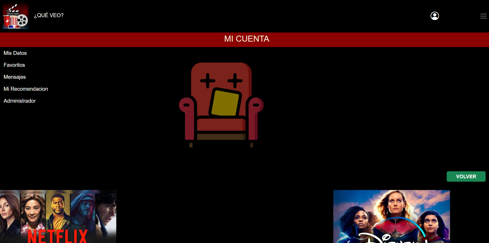
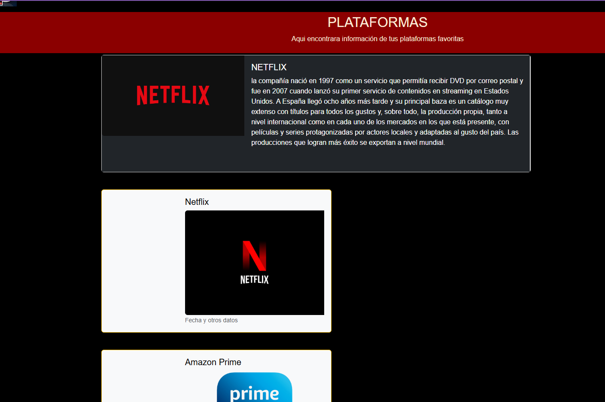
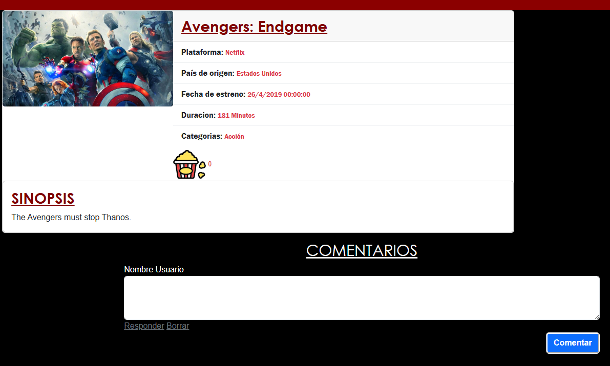

¡Hola! Soy Jonatan Lazarte
Técnico Universitario en Programación
Graduado de la UTN FRGP.
Graduado de la UTN FRGP.
Soy Desarrollador de Software y Técnico Universitario en Programación graduado de la UTN FRGP. Me enfoco en construir aplicaciones eficientes, bien estructuradas y escalables.
Tengo experiencia desarrollando software con C# / .NET y Java, integrados a bases de datos SQL Server mediante consultas y procedimientos almacenados. Mi base lógica se construyó sobre C++, dándome una comprensión profunda de POO y del manejo de memoria. Además, la participación en proyectos grupales universitarios me permitió afianzar el trabajo colaborativo con Git y GitHub.
Me apasiona resolver problemas mediante código y aprender de forma continua. Busco sumar valor en proyectos desafiantes donde pueda aportar mis conocimientos técnicos y continuar creciendo profesionalmente.
 SQL Server
SQL Server
Trabajo Grupal | UTN FRGP





Aplicación web integral para descubrir contenido y consultar su disponibilidad en plataformas de streaming. Permite a los usuarios registrarse, puntuar títulos y dejar comentarios bajo un flujo de moderación y aprobación por parte del administrador. El proyecto fue desarrollado en equipo utilizando Git y GitHub para el control de versiones y la integración de código, con una arquitectura basada en .NET Framework con C# y una base de datos SQL Server mediante stored procedures y triggers.
Ver en GitHubSimulador Financiero Integral


Plataforma web de gestión financiera desarrollada de forma colaborativa, con arquitectura cliente-servidor desarrollada en Java y conectada a MySQL. Incluye un Panel de Administrador para la gestión (ABML) de usuarios, aprobación de préstamos y generación de reportes financieros. Por el lado del cliente, permite el registro de usuarios, activación de cuentas, simulación de transferencias en tiempo real, solicitud y pago de préstamos, y consulta de movimientos. El proyecto se gestionó bajo metodologías de trabajo ágil utilizando Trello para la asignación de tareas, Discord para la coordinación de sprints y Git/GitHub para el control de versiones.
Ver en GitHub